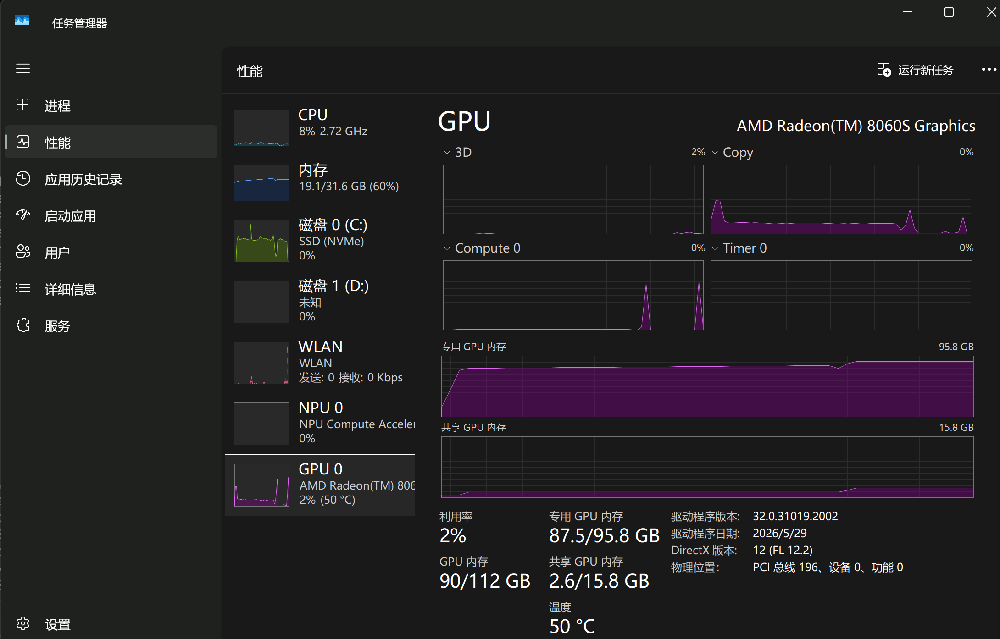
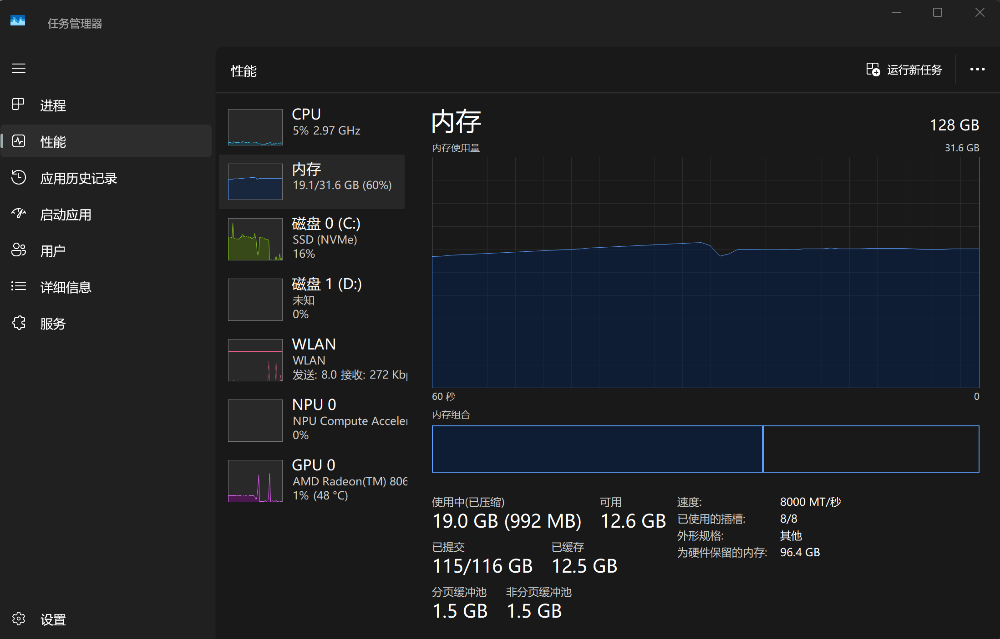
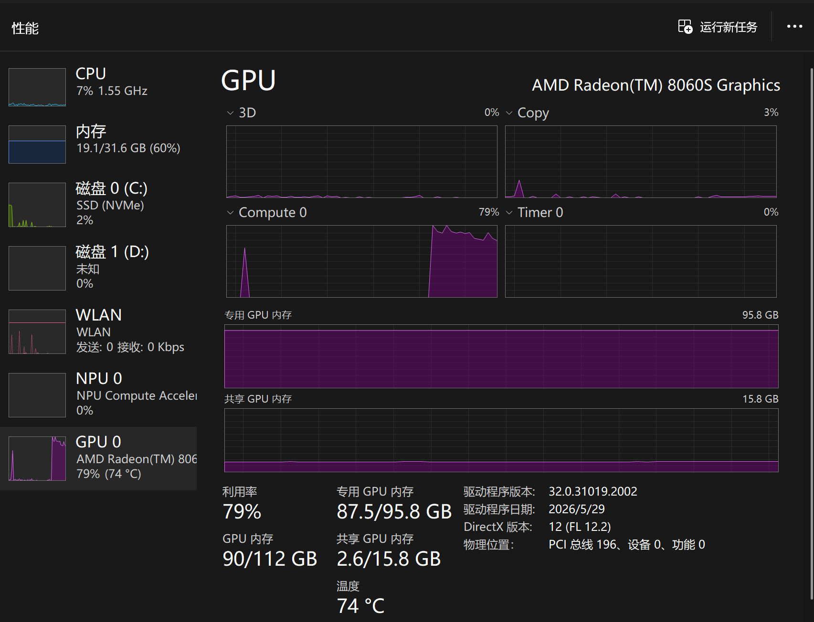
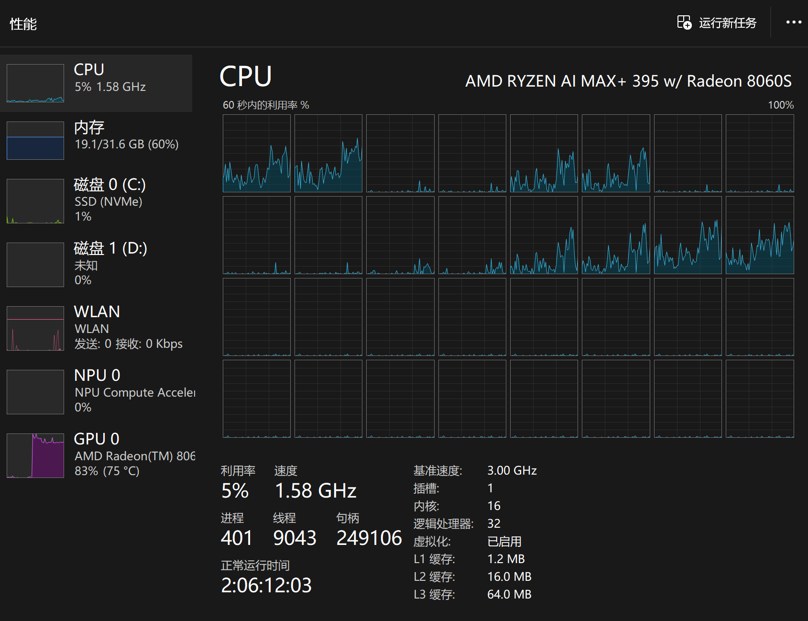
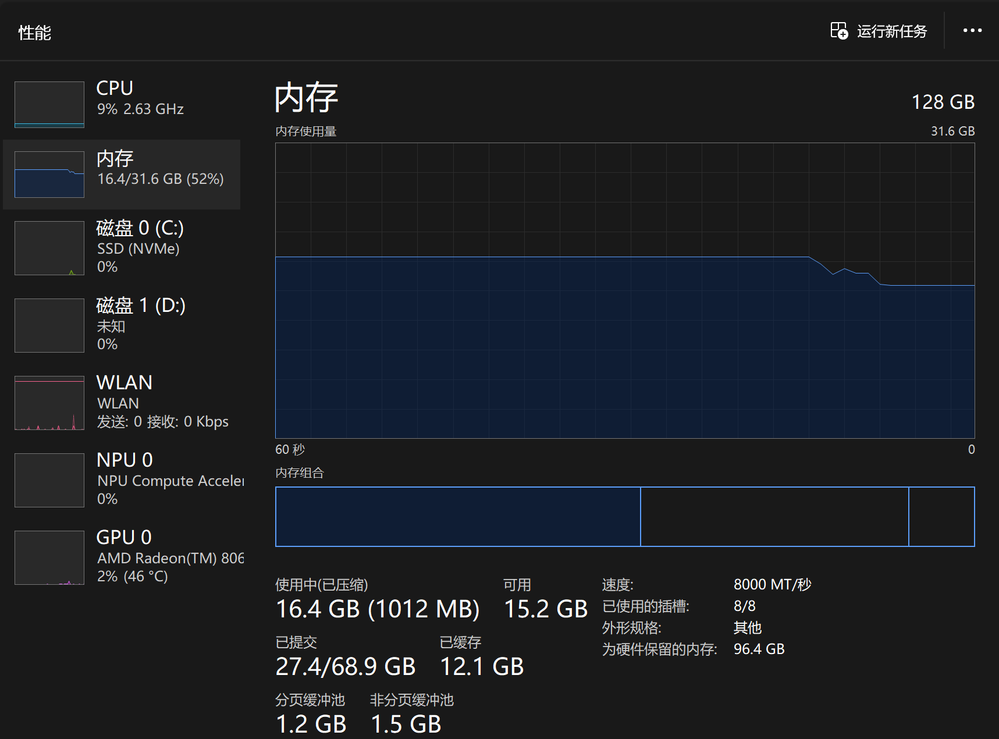
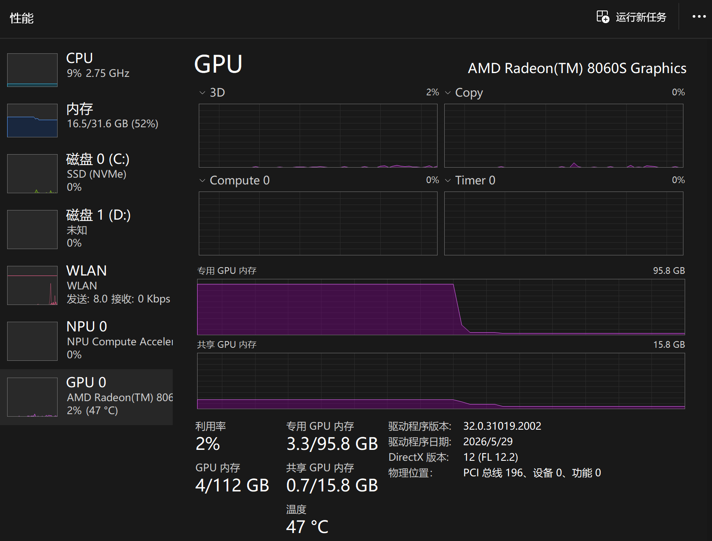
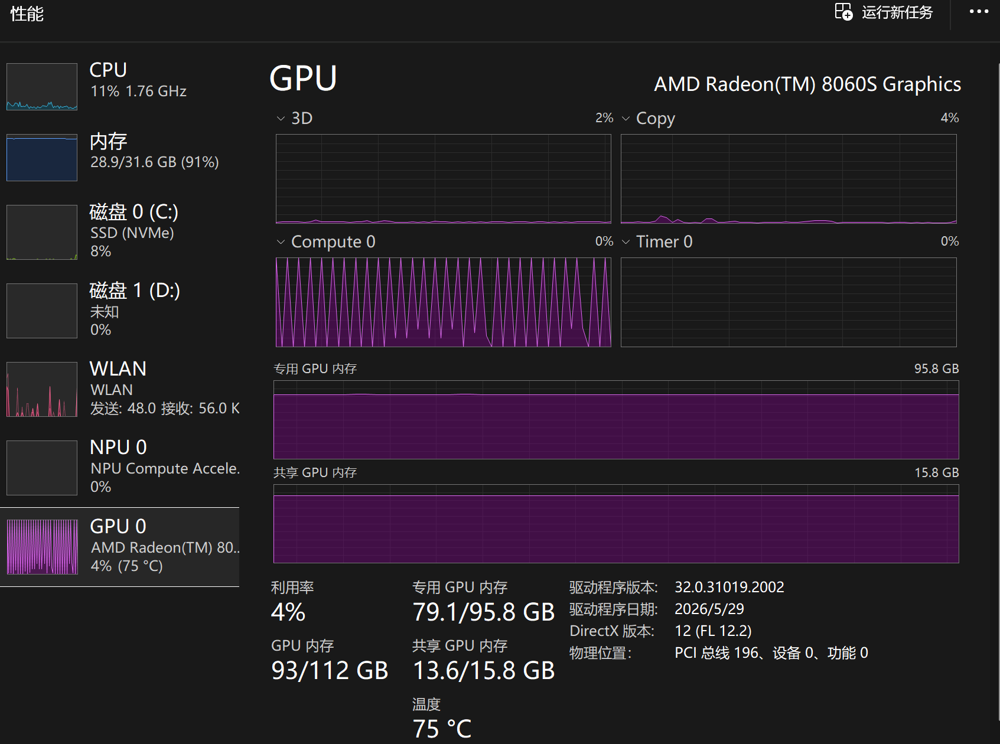
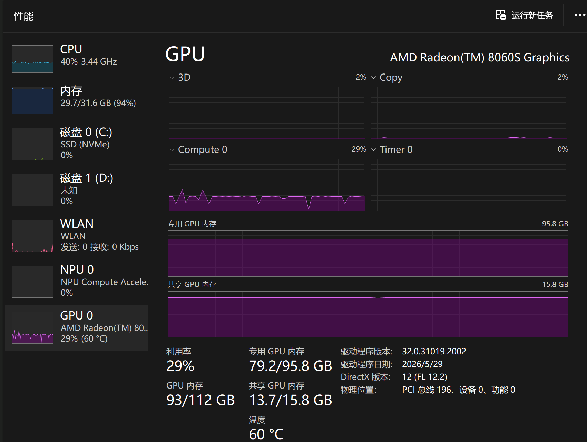
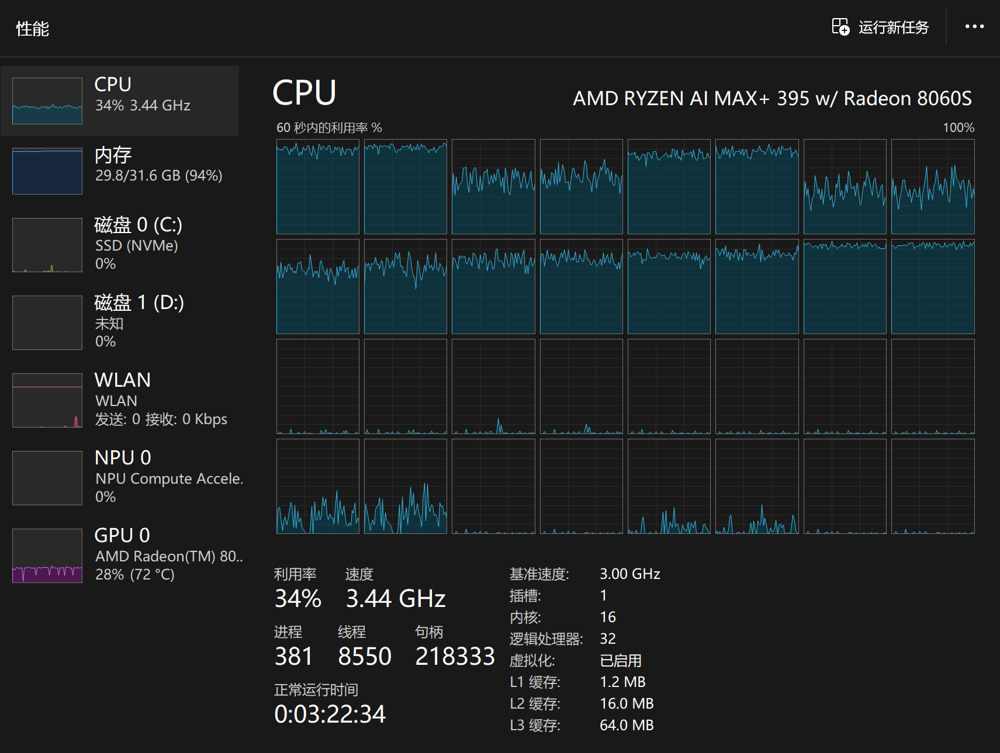
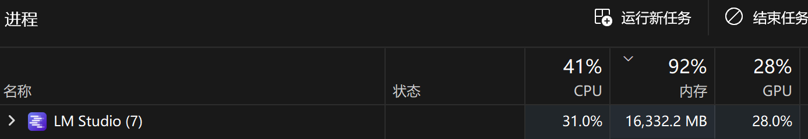

AMD AI MAX+395 跑 QWEN3.5-122B-A10B-MTP-Q4 实测
之前有测了这个芯片跑QWEN3.6-27B和QWEN3.6-35B-A3B的MTP对比，《本地模型性能翻倍！qwen3.6-MTP测试》
但那两个模型体积小，还不如买两张二手前代甚至前前代的游戏N卡去跑，价格更便宜性能也更强。那我这AMD是笑话么？不，这台机器有128GB统一内存，windows下可以分96G给显存，完全能跑更大的模型，今天就来测下QWEN3.5-122B-A10B这个80GB左右的模型。
可能有人问现在QWEN都3.7了为什么还用3.5？其实从3.6开始开源策略就变了，大于35B的模型不再开源了，80B/122B/397B目前只有3.5的，3.6-PLUS和3.6-MAX都不开源，3.7甚至一个开源的都没有。
另外，我之前批量测试本地模型时，有关注到lmstudio里跑QWEN3.5-122B-A10B-Q4_K_S能到20t/s，如果开启MTP提一提速，没准真的能达到本地可用的级别，可能会比QWEN3.6-27B开MTP的性能更好，而且其参数量是27B的4.5倍！虽然激活参数量只有10B，还不到27B的一半，但大概率比35B-A3B只激活3B要更聪明。
我手上122B有三个版本，都是unsloth量化的：
- Qwen3.5-122B-A10B-GGUF Q4_K_S
- Qwen3.5-122B-A10B-MTP-GGUF Q4_K_S
- Qwen3.5-122B-A10B-MTP-GGUF Q4_K_XL
由于模型太大下载耗时间，而且磁盘空间也不够了，Q4_K_XL的非MTP版本就没下（玩本地大模型高速大容量的硬盘是必备的，1T都是小硬盘了）。
llama.cpp 用的版本是 llama-b9190-bin-win-vulkan-x64
先说结论
MTP确实有用，Q4_K_S版本从21.66提到了33.15 tokens/s，提升了53%。不过这个是S的型号，XL的估计性能会稍弱点，但更适合复杂任务。
性能数据
Q4_K_S 非MTP vs MTP对比：
| 配置 | 生成速度 (tokens/s) | 提升幅度 |
|---|---|---|
| 非MTP | 21.66 | - |
| MTP (spec-draft-n-max=4) | 33.15 | +53% |
MTP Q4_K_S 不同 spec-draft-n-max 值：
| spec-draft-n-max | 生成速度 (tokens/s) | 草稿接受率 |
|---|---|---|
| 2 | 29.15 | 83.9% |
| 3 | 30.97 | 81.2% |
| 4 | 33.15 | 77.8% |
| 5 | 31.12 | 70.1% |
MTP Q4_K_XL 版本：
| spec-draft-n-max | 生成速度 (tokens/s) | 草稿接受率 |
|---|---|---|
| 1 | 25.30 | 92.3% |
| 2 | 28.53 | 85.8% |
| 3 | 30.66 | 83.2% |
| 4 | 30.60 | 76.9% |
| 5 | 28.93 | 68.1% |
资源占用
但是，395这个芯片有个尴尬的地方。统一内存分配96GB给显存，加载模型参数文件时显存占了八十多GB，但内存32GB也几乎全占满了，再想启动其他大内存程序就难了。不过加 --no-mmap可以避免这个问题。
如果用N卡，可能要买张96G的RTX PRO 6000才能装下这个122B模型，虽然速度远超AMD 395，但其价格是AMD 395的好几倍了。
下面是Qwen3.5-122B-A10B-MTP-GGUF Q4_K_XL加 --no-mmap的资源使用情况：
-
加载模型阶段（电脑上已经运行了很多日常办公必要的程序了）


-
模型使用阶段（其实可以看到有2.6GB显存是从内存上借的，这和内存占用增加了2.6GB是符合的）


-
卸载模型


启动脚本
@echo off
setlocal EnableExtensions EnableDelayedExpansion
REM Run from this script's directory so relative executable paths always work.
cd /d "%~dp0"
REM =========================
REM Model files (local paths)
REM =========================
REM Split GGUF: only the first shard is specified; llama.cpp loads the rest automatically.
set "MODEL_DIR=%USERPROFILE%\.lmstudio\models\unsloth\Qwen3.5-122B-A10B-MTP-GGUF"
set "MODEL_FILE=%MODEL_DIR%\Qwen3.5-122B-A10B-UD-Q4_K_XL-00001-of-00003.gguf"
set "MMPROJ_FILE=%MODEL_DIR%\mmproj-F32.gguf"
REM =========================
REM Server settings
REM =========================
set "HOST=127.0.0.1"
set "PORT=8001"
set "ALIAS=unsloth/Qwen3.5-122B-A10B-MTP-GGUF"
set "CTX_SIZE=262144"
set "N_GPU_LAYERS=999"
set "BATCH_SIZE=2048"
set "N_PARALLEL=1"
REM Recommended non-thinking defaults from Unsloth guide.
set "TEMP=0.7"
set "TOP_P=0.8"
set "TOP_K=20"
set "MIN_P=0.00"
set "PRESENCE_PENALTY=1.5"
REM MTP settings:
REM New flag (May 2026+) is --spec-type draft-mtp.
REM Unsloth notes draft-n-max=2 often gives best real speed/acceptance tradeoff.
set "SPEC_TYPE=draft-mtp"
set "SPEC_DRAFT_N_MAX=4"
REM Qwen3.5 reasoning mode control (new flag).
REM Use off for non-thinking mode; change to on if needed.
set "REASONING=off"
REM Auto-detect multi-slot flags:
REM N_PARALLEL > 1 => enable --kv-unified and --cache-idle-slots
REM N_PARALLEL = 1 => no extra flags (avoids "requires --kv-unified" warning)
set "EXTRA_FLAGS="
if %N_PARALLEL% GTR 1 (
set "EXTRA_FLAGS=--kv-unified --cache-idle-slots"
)
echo.
echo [INFO] Starting llama-server for Qwen3.5-122B-A10B-MTP...
echo [INFO] Endpoint: http://%HOST%:%PORT%/v1
echo [INFO] Model: %MODEL_FILE%
echo [INFO] MMProj: %MMPROJ_FILE%
echo.
if not exist "%MODEL_FILE%" (
echo [ERROR] Model file not found:
echo %MODEL_FILE%
exit /b 1
)
if not exist "%MMPROJ_FILE%" (
echo [ERROR] MMProj file not found:
echo %MMPROJ_FILE%
exit /b 1
)
if not exist "llama-server.exe" (
echo [ERROR] llama-server.exe not found in:
echo %CD%
exit /b 1
)
llama-server.exe ^
--host %HOST% ^
--port %PORT% ^
--model "%MODEL_FILE%" ^
--mmproj "%MMPROJ_FILE%" ^
--alias "%ALIAS%" ^
--gpu-layers %N_GPU_LAYERS% ^
--flash-attn on ^
--kv-offload ^
--batch-size %BATCH_SIZE% ^
--parallel %N_PARALLEL% ^
%EXTRA_FLAGS% ^
--ctx-size %CTX_SIZE% ^
--no-mmap ^
--temp %TEMP% ^
--top-p %TOP_P% ^
--top-k %TOP_K% ^
--min-p %MIN_P% ^
--presence-penalty %PRESENCE_PENALTY% ^
--spec-type %SPEC_TYPE% ^
--spec-draft-n-max %SPEC_DRAFT_N_MAX% ^
--image-min-tokens 1024 ^
--reasoning %REASONING%
set "EXIT_CODE=%ERRORLEVEL%"
echo.
echo [INFO] llama-server exited with code %EXIT_CODE%.
exit /b %EXIT_CODE%
实际使用建议
--spec-draft-n-max 4是Qwen3.5-122B-A10B-MTP-GGUF Q4这个模型性能和接受率比较好的平衡点- 用的时候关掉其他占内存的程序
- Q4_K_XL版本速度稍慢但更适合复杂任务，看自己需求选
- 本测试仅为我当前环境测试结果，不具有普适性
- max395这个芯片的AI性能目前肯定是弱于MAC M5和专业计算N卡的，而且是几倍的差异，建议想好自己的使用场景再进行选择，本文不包含任何购买建议。
接入vscode copilot执行真实任务
读取多个GaussDB生产的复杂SQL的plantrace文件（官方文档缺失解读方法），生成逐行解读的说明，这是一个有很大的上下文且生成token量也大的任务。
一开始使用的是llama.cpp
- 当上下文长度达到40k时，生成速度会掉到21 token/s
prompt eval time = 266727.26 ms / 40890 tokens ( 6.52 ms per token, 153.30 tokens per second)
eval time = 334591.12 ms / 7027 tokens ( 47.62 ms per token, 21.00 tokens per second)
total time = 601318.38 ms / 47917 tokens
draft acceptance rate = 0.64977 ( 5076 accepted / 7812 generated)
27.50.699.930 I statistics draft-mtp: #calls(b,g,a) = 11 2281 2281, #gen drafts = 2281, #acc drafts = 2002, #gen tokens = 9124, #acc tokens = 6248, dur(b,g,a) = 0.039, 78206.375, 6.603 ms
27.50.703.263 I slot release: id 0 | task 376 | stop processing: n_tokens = 78672, truncated = 0
27.50.704.156 I slot print_timing: id 0 | task -1 | n_decoded = 7027, tg = 21.00 t/s
- 当上下文达到90K的时候,llama server奔溃了，没去排查原因，可能是我用的llama.cpp版本有BUG，切到 lmstudio 正常继续，但 lmstduio 的生成速度比llama.cpp慢多了，掉到了8t/s,预填充也变慢了，观察资源使用，内存都快用完了，而且GPU计算这个锯齿波形感觉使不上力一样。

- 114k 上下文，在生成阶段已经掉到 6t/s,
2026-06-10 14:25:49 [DEBUG]
21.31.657.665 I slot create_check: id 3 | task 314 | created context checkpoint 7 of 32 (pos_min = 114859, pos_max = 114859, n_tokens = 114860, size = 375.590 MiB)
2026-06-10 14:25:49 [INFO]
[qwen3.5-122b-a10b-mtp] Prompt processing progress: 100.0%
2026-06-10 14:26:06 [DEBUG]
21.49.055.746 I slot print_timing: id 3 | task 314 | n_decoded = 103, tg = 6.08 t/s
- 观察到GPU没有全速了，部分计算在CPU上



- lmstudio 也开了mtp4。只是gpu卸载层数只保持了默认的42，没拉满到49，这就是导致CPU参与计算的原因。
目前初步判断下来这套组合不适合执行长周期的多轮调度任务，只适合做单轮或者少数几轮的复杂任务。
在kv cache有效时，预填充的耗时还是可以接受的，参考下面的日志，130K的上下文几秒就弄完了，如果没命中cache，160t/s估计得15分钟左右才能填充完
2026-06-10 15:32:34 [INFO]
[qwen3.5-122b-a10b-mtp] Running chat completion on conversation with 86 messages.
2026-06-10 15:32:34 [INFO]
[qwen3.5-122b-a10b-mtp] Streaming response...
2026-06-10 15:32:34 [DEBUG]
LlamaV4::predict slot selection: session_id=<empty> server-selected (LCP/LRU)
2026-06-10 15:32:34 [DEBUG]
88.17.272.059 I slot get_availabl: id 3 | task -1 | selected slot by LCP similarity, sim_best = 0.998 (> 0.100 thold), f_keep = 0.999
2026-06-10 15:32:34 [DEBUG]
88.17.272.512 I slot launch_slot_: id 3 | task 5951 | processing task, is_child = 0
88.17.272.644 W slot update_slots: id 3 | task 5951 | cache reuse is not supported - ignoring n_cache_reuse = 256
88.17.272.774 I slot update_slots: id 3 | task 5951 | Checking checkpoint with [138885, 138885] against 138889...
2026-06-10 15:32:34 [DEBUG]
88.17.363.052 W slot update_slots: id 3 | task 5951 | restored context checkpoint (pos_min = 138885, pos_max = 138885, n_tokens = 138886, n_past = 138886, size = 422.974 MiB)
2026-06-10 15:32:34 [INFO]
[qwen3.5-122b-a10b-mtp] Prompt processing progress: 0.0%
2026-06-10 15:32:37 [INFO]
[qwen3.5-122b-a10b-mtp] Prompt processing progress: 98.1%
2026-06-10 15:32:38 [INFO]
[qwen3.5-122b-a10b-mtp] Prompt processing progress: 100.0%
2026-06-10 15:32:52 [DEBUG]
88.35.286.021 I slot print_timing: id 3 | task 5951 | n_decoded = 102, tg = 7.02 t/s
2026-06-10 15:32:56 [DEBUG]
88.38.640.241 I slot print_timing: id 3 | task 5951 | n_decoded = 128, tg = 7.16 t/s
2026-06-10 15:32:59 [DEBUG]
88.41.850.033 I slot print_timing: id 3 | task 5951 | n_decoded = 154, tg = 7.30 t/s
2026-06-10 15:33:02 [DEBUG]
88.45.060.957 I slot print_timing: id 3 | task 5951 | n_decoded = 177, tg = 7.28 t/s
2026-06-10 15:33:05 [DEBUG]
88.48.193.931 I slot print_timing: id 3 | task 5951 | n_decoded = 200, tg = 7.29 t/s
2026-06-10 15:33:08 [DEBUG]
88.51.262.193 I slot print_timing: id 3 | task 5951 | n_decoded = 223, tg = 7.31 t/s
2026-06-10 15:33:12 [DEBUG]
88.54.617.008 I slot print_timing: id 3 | task 5951 | n_decoded = 247, tg = 7.30 t/s
2026-06-10 15:33:15 [DEBUG]
88.57.819.669 I slot print_timing: id 3 | task 5951 | n_decoded = 270, tg = 7.29 t/s
2026-06-10 15:33:16 [DEBUG]
88.59.444.844 I slot print_timing: id 3 | task 5951 | prompt eval time = 3487.09 ms / 213 tokens ( 16.37 ms per token, 61.08 tokens per second)
88.59.444.856 I slot print_timing: id 3 | task 5951 | eval time = 38685.01 ms / 283 tokens ( 136.70 ms per token, 7.32 tokens per second)
88.59.444.857 I slot print_timing: id 3 | task 5951 | total time = 42172.10 ms / 496 tokens
88.59.444.858 I slot print_timing: id 3 | task 5951 | graphs reused = 5769
88.59.444.860 I slot print_timing: id 3 | task 5951 | draft acceptance = 0.71918 ( 210 accepted / 292 generated)
88.59.444.888 I statistics draft-mtp: #calls(b,g,a) = 23 5879 5879, #gen drafts = 5879, #acc drafts = 5250, #gen tokens = 23516, #acc tokens = 17178, dur(b,g,a) = 0.061, 176332.186, 12.013 ms
2026-06-10 15:33:16 [DEBUG]
88.59.447.464 I slot release: id 3 | task 5951 | stop processing: n_tokens = 139383, truncated = 0
88.59.447.489 I srv update_slots: all slots are idle
2026-06-10 15:33:16 [DEBUG]
LlamaV4: server assigned slot 3 to task 5951
2026-06-10 15:33:16 [INFO]
[qwen3.5-122b-a10b-mtp] Finished streaming response
- 尝试把GPU卸载层数拉满，CPU和内存的开销降下来了，而且生成速度又回到了22t/s
2026-06-10 16:17:07 [INFO]
[qwen3.5-122b-a10b-mtp] Running chat completion on conversation with 121 messages.
2026-06-10 16:17:07 [INFO]
[qwen3.5-122b-a10b-mtp] Streaming response...
2026-06-10 16:17:07 [DEBUG]
LlamaV4::predict slot selection: session_id=<empty> server-selected (LCP/LRU)
2026-06-10 16:17:07 [DEBUG]
25.51.464.939 I slot get_availabl: id 3 | task -1 | selected slot by LCP similarity, sim_best = 0.998 (> 0.100 thold), f_keep = 0.998
25.51.465.315 I slot launch_slot_: id 3 | task 418 | processing task, is_child = 0
25.51.465.451 W slot update_slots: id 3 | task 418 | cache reuse is not supported - ignoring n_cache_reuse = 256
25.51.465.596 I slot update_slots: id 3 | task 418 | Checking checkpoint with [149162, 149162] against 149166...
2026-06-10 16:17:08 [DEBUG]
25.51.586.591 W slot update_slots: id 3 | task 418 | restored context checkpoint (pos_min = 149162, pos_max = 149162, n_tokens = 149163, n_past = 149163, size = 443.242 MiB)
2026-06-10 16:17:08 [INFO]
[qwen3.5-122b-a10b-mtp] Prompt processing progress: 0.0%
2026-06-10 16:17:11 [DEBUG]
25.54.740.905 I slot print_timing: id 3 | task 418 | prompt processing, n_tokens = 269, progress = 1.00, t = 3.28 s / 82.12 tokens per second
2026-06-10 16:17:11 [INFO]
[qwen3.5-122b-a10b-mtp] Prompt processing progress: 98.5%
2026-06-10 16:17:11 [DEBUG]
25.55.058.298 I slot create_check: id 3 | task 418 | created context checkpoint 7 of 32 (pos_min = 149431, pos_max = 149431, n_tokens = 149432, size = 443.773 MiB)
2026-06-10 16:17:11 [INFO]
[qwen3.5-122b-a10b-mtp] Prompt processing progress: 100.0%
2026-06-10 16:17:17 [DEBUG]
26.00.902.849 I slot print_timing: id 3 | task 418 | n_decoded = 101, tg = 17.69 t/s
2026-06-10 16:17:20 [DEBUG]
26.03.956.178 I slot print_timing: id 3 | task 418 | n_decoded = 169, tg = 19.28 t/s
2026-06-10 16:17:23 [DEBUG]
26.07.049.335 I slot print_timing: id 3 | task 418 | n_decoded = 247, tg = 20.83 t/s
2026-06-10 16:17:26 [DEBUG]
26.10.077.118 I slot print_timing: id 3 | task 418 | n_decoded = 312, tg = 20.96 t/s
2026-06-10 16:17:29 [DEBUG]
26.13.142.091 I slot print_timing: id 3 | task 418 | n_decoded = 385, tg = 21.45 t/s
2026-06-10 16:17:32 [DEBUG]
26.16.323.415 I slot print_timing: id 3 | task 418 | n_decoded = 459, tg = 21.72 t/s
2026-06-10 16:17:35 [DEBUG]
26.19.398.102 I slot print_timing: id 3 | task 418 | n_decoded = 537, tg = 22.19 t/s
2026-06-10 16:17:38 [DEBUG]
26.22.406.446 I slot print_timing: id 3 | task 418 | n_decoded = 597, tg = 21.94 t/s
2026-06-10 16:17:41 [DEBUG]
26.25.455.663 I slot print_timing: id 3 | task 418 | n_decoded = 676, tg = 22.34 t/s
2026-06-10 16:17:45 [DEBUG]
26.28.510.836 I slot print_timing: id 3 | task 418 | n_decoded = 752, tg = 22.57 t/s
2026-06-10 16:17:48 [DEBUG]
26.31.560.182 I slot print_timing: id 3 | task 418 | n_decoded = 816, tg = 22.44 t/s
2026-06-10 16:17:48 [DEBUG]
26.32.140.132 I slot print_timing: id 3 | task 418 | prompt eval time = 3726.37 ms / 273 tokens ( 13.65 ms per token, 73.26 tokens per second)
26.32.140.158 I slot print_timing: id 3 | task 418 | eval time = 36947.50 ms / 830 tokens ( 44.52 ms per token, 22.46 tokens per second)
26.32.140.161 I slot print_timing: id 3 | task 418 | total time = 40673.87 ms / 1103 tokens
26.32.140.168 I slot print_timing: id 3 | task 418 | graphs reused = 511
26.32.140.172 I slot print_timing: id 3 | task 418 | draft acceptance = 0.81959 ( 636 accepted / 776 generated)
26.32.140.222 I statistics draft-mtp: #calls(b,g,a) = 6 525 525, #gen drafts = 525, #acc drafts = 474, #gen tokens = 2100, #acc tokens = 1614, dur(b,g,a) = 0.019, 18657.710, 1.362 ms
2026-06-10 16:17:48 [DEBUG]
26.32.147.501 I slot release: id 3 | task 418 | stop processing: n_tokens = 150266, truncated = 0
26.32.147.572 I srv update_slots: all slots are idle
2026-06-10 16:17:48 [DEBUG]
LlamaV4: server assigned slot 3 to task 418
2026-06-10 16:17:48 [INFO]
[qwen3.5-122b-a10b-mtp] Finished streaming response
总结
本次在amd ai max395上测试了80GB大小的Qwen3.5-122B-A10B-MTP-GGUF Q4_K_XL ，mtp配置到4的情况下输出可以达到30 tokens/s，并且在上下文达到140K时依然能有22 tokens/s的生成速度。
所以目前我本地LLM就有了三个选择：
- qwen3.6-27b 编码任务
- qwen3.6-35b-a3b 日常任务
- qwen3.5-122b-a10b 27b解决不了时的备选
我下载测试了很多模型，下载量已经超过1TB了，但当前留下来的只有这三个，都是qwen的。
不过qwen目前的开源策略令人有点担心，其他家的开源模型不断在出新的，而qwen开源模型已经停更很久了，各个厂家的模型也有些"个性"需要使用人去适应。谁也不想好不容易适应了一个厂家的开源模型后，发现这个厂家的开源模型能力再也没有提升吧。